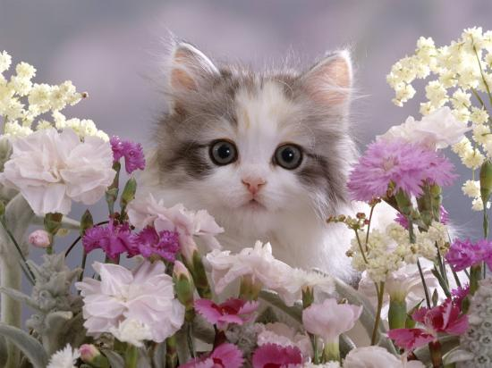

welcome to Anisha's cat shop!
we are so excited here to explore our perfect collection for your furry friends and find something special today
The Exclusive Story of Anisha’s Catshop
Our story began in 2026, when the business was created with a vision to offer not just feline care but a world of refined luxury built around trust, elegance and thoughtful design. It started with our signature care contracts, developed to provide cat owners with peace of mind through tailored grooming schedules, wellness plans and premium service commitments. As our boutique expanded so did our selection of exquisite products—from handcrafted toys and health‑focused treats to bespoke accessories crafted for comfort and style. Each season, we introduced exclusive packages featuring curated grooming treatments, themed toys and limited‑edition items inspired by the changing months. To elevate the experience further, we designed our luxurious feline enclosures—safe, stylish spaces created for relaxation, exploration, and high‑end comfort. Every element of Anisha’s Catshop—our contracts, services, products, seasonal offerings and specialty enclosures—was built with one purpose in mind: to celebrate the grace, beauty and personality of every cat who becomes part of our story.
